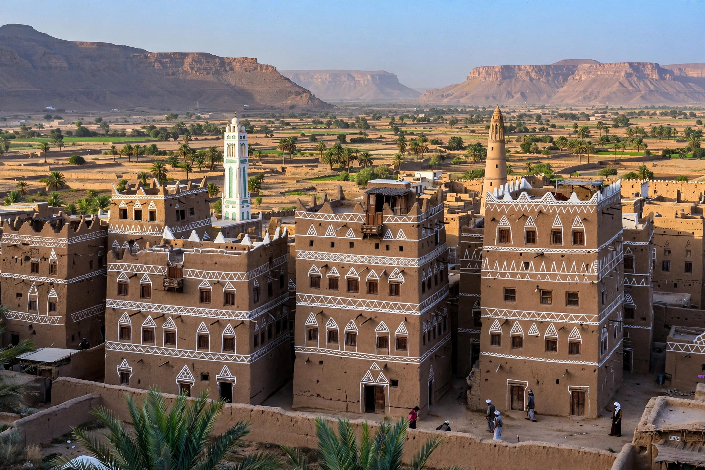

Zaidism
| Zaidism | |
|---|---|
| Also known as | Zaidiyya, Fivers |
| Founded | 8th century |
| Founder | Zayd ibn Ali |
| Centre | Yemen (northern highlands) |
Zaidism (Arabic: الزيدية, al-Zaydiyya) is a branch of Shia Islam named after Zayd ibn Ali, grandson of Husayn ibn Ali. Its followers are sometimes called "Fivers" because they recognise five imams. Zaidism is the dominant form of Islam in northern Yemen, where the Houthi movement draws much of its identity from Zaidi heritage.

1. Origins
2. Doctrine
3. History in Yemen
4. Modern era
Origins
After the martyrdom of Husayn at Karbala (680 CE), succession disputes divided the Shia. When Zayd ibn Ali rose against the Umayyad Caliphate in 740 and was killed, his followers maintained that the imamate belongs to any learned descendant of Ali and Fatimah who publicly claims it and takes up arms against unjust rule.
Doctrine
Zaidism differs from Twelver Shi'ism in rejecting the notion of a hidden imam and in its more positive view of the first two caliphs, Abu Bakr and Umar. Zaidi theology is closer to the Mu'tazila rationalist school, emphasising divine justice and human free will. Unlike Twelvers, Zaidis hold that the imam must be politically active: rebellion against tyranny is a religious duty.
History in Yemen
Zaidi imams ruled much of Yemen from 897, when Yahya ibn al-Husayn founded the Rassid dynasty, until the 1962 revolution that created the Yemen Arab Republic. The imamate was theocratic but relatively decentralised, with tribal structures retaining autonomy.
Modern era
The Houthi movement (Ansar Allah), founded in the 1990s by Hussein al-Houthi, emerged from Zaidi revivalism in Saada province. Its 2014 seizure of Sana'a precipitated the ongoing Yemeni civil war, in which Saudi Arabia and the United Arab Emirates intervened against the Houthis.
See also: Shia Islam · Houthi movement · Yemen